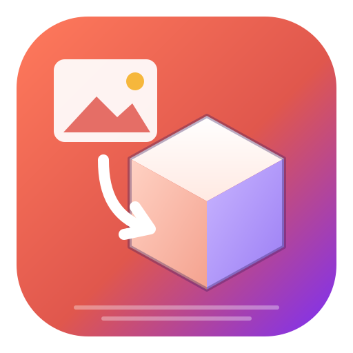
My3DObjects 사용 설명서
사진 한 장을 3D 물체로 바꾸고, 3D 파일을 열어 보고, 다른 형식이나 3D 프린터용 파일로 저장하는 프로그램입니다.
1. 소개
My3DObjects는 Stable Fast 3D · SPAR3D(Stability AI), TripoSR(Tripo AI · Stability AI), TRELLIS(Microsoft), Hunyuan3D(Tencent)를 이 컴퓨터에서 직접 실행해 이미지를 3D 물체로 바꿉니다. Windows · macOS · Linux 데스크톱 앱과 웹 브라우저에서 같은 화면으로 동작합니다.
- 로컬 실행이 기본 — 이미지가 컴퓨터 밖으로 나가지 않습니다. 유료 Stability AI API는 설정에서 직접 켜야만 쓰입니다.
- GPU가 있으면 GPU, 없으면 CPU — 따로 고를 필요가 없습니다. GPU에서 실패하면 자동으로 CPU에서 다시 변환합니다.
- 자동 설치 — Python, PyTorch, 모델을 처음 실행할 때 알아서 설치합니다. 과정은 하단 로그 패널에 보입니다.
- 3D 뷰어 · 변환기 — GLB, glTF, OBJ, STL, PLY, FBX, DAE, 3MF, 3DS, USDZ 등을 열고 GLB, glTF, OBJ, STL, PLY, USDZ, 3MF, AMF, DAE, VRML, VTK, PCD, XYZ로 내보냅니다. 여러 방향의 그림을 A4로 인쇄합니다.
- 3D 프린터로 바로 — mm 크기 · Z 위쪽 · 바닥에 놓기 · 구멍 메우기 · 면 방향 정리를 거친 3MF(색 포함) · STL로 저장하고, 닫힌(수밀) 메시인지 보여 줍니다 (15장).
- 튜토리얼과 예제 — 실제 화면을 움직이며 33단계로 안내하는 튜토리얼과, 바로 열어 볼 수 있는 예제 이미지 17장 · 3D 파일이 들어 있습니다.
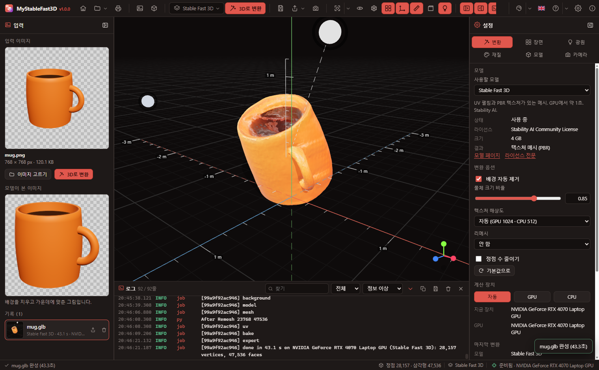
2. 설치와 첫 실행
- 설치 파일(Windows
My3DObjects_1.0.0_x64-setup.exe, macOS.dmg, Linux.AppImage/.deb)을 실행합니다. - 프로그램을 처음 열면 엔진이 자동으로 설치됩니다. 순서는 다음과 같습니다.
단계 내용 크기(대략) uv · Python 엔진 전용 Python 3.11 (시스템 Python은 건드리지 않음) 60 MB PyTorch NVIDIA GPU가 있으면 CUDA 판, 없으면 CPU 판, Mac은 기본 판(Apple GPU) CUDA 2.5 GB · CPU 200 MB 라이브러리 transformers, trimesh, rembg 등 500 MB 배경 제거 모델 u2net 176 MB 변환 모델 고른 모델의 코드와 가중치 (처음 쓸 때) SF3D 4 GB · SPAR3D 4.5 GB · TripoSR 1.7 GB · TRELLIS 3.9 GB · Hunyuan3D 3.8–7.4 GB - 설치가 끝나면 상태 표시줄 오른쪽에 준비됨 · (장치 이름)이 나타납니다. 이후 실행에서는 설치를 건너뜁니다.
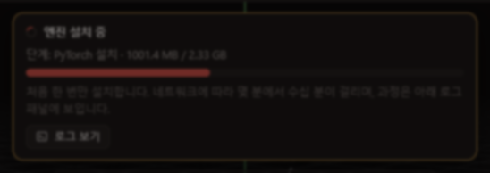
3. 화면 구성
창에는 따로 제목 표시줄이 없고 툴바가 그 역할을 합니다. 맨 왼쪽에 프로그램 아이콘이 있고, 공간이 넉넉하면 이름과 버전도 보입니다. 툴바의 빈 곳을 끌면 창이 움직이고, 두 번 누르면 최대화됩니다. 맨 오른쪽에 최소화 · 최대화 · 닫기 단추가 있고, 창 크기는 상태 표시줄 오른쪽 끝의 손잡이나 창 가장자리를 끌어 바꿉니다.
| 영역 | 내용 |
|---|---|
| 툴바 (위) | 프로그램 아이콘, 홈 · 파일 메뉴(3D 프린트용 저장 포함) · 인쇄, 이미지/3D 파일 열기, 모델 선택 드롭다운과 3D로 변환, 저장 · 내보내기 · 화면 저장, 보기(화면 맞춤 · 방향 · 자동 회전 · 와이어프레임 · 격자 · 좌표축 · 눈금자 · 경계 상자 · 광원 손잡이), 패널 표시. 오른쪽 끝에 테마 · 언어 · 도움말(사용 설명서 · 튜토리얼) · 설정 · 정보, 그리고 창 단추 |
| 입력 패널 (왼쪽) | 입력 이미지, 모델이 본 이미지(배경 제거 후), 이번 실행의 기록(변환 결과와 연 파일) |
| 3D 화면 (가운데) | 모델, 무한 격자, 좌표축, 눈금자, 광원, 방향 큐브(오른쪽 아래) |
| 설정 패널 (오른쪽) | 변환 · 장면 · 광원 · 재질 · 모델 · 카메라 탭 |
| 로그 패널 (아래) | 설치와 변환의 모든 과정 |
| 상태 표시줄 (맨 아래) | 지금 하는 일과 진행률, 정점 · 삼각형 수, 모델, 엔진 상태와 장치 |
왼쪽 · 오른쪽 패널은 창 아래(상태 표시줄)까지 이어지고, 로그 패널은 그 사이 가운데에 있습니다. 패널은 안쪽 경계를 끌어 폭을 바꾸고 머리글의 버튼으로 접습니다. 로그 패널은 위쪽 경계를 끌어 높이를 바꿉니다.
4. 시작 화면
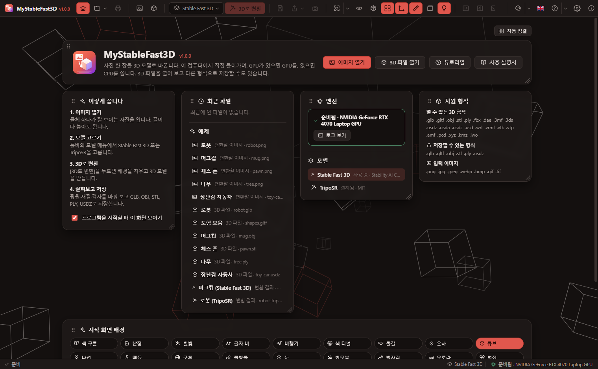
프로그램을 열면 시작 화면이 나옵니다. 이미지 열기 · 3D 파일 열기 · 튜토리얼 · 사용 설명서 버튼, 사용 순서, 최근 파일과 예제, 엔진 상태와 모델 목록, 지원 형식, 배경 설정이 있습니다. 툴바의 홈 버튼으로 언제든 보이거나 숨길 수 있고, 프로그램을 시작할 때 이 화면 보이기를 끄면 시작할 때 바로 3D 화면이 나옵니다. 시작 화면에서는 좌우 패널과 로그 패널이 보이지 않고, 툴바의 패널 단추도 꺼집니다.
- 패널 옮기기 · 크기 바꾸기: 제목 앞의 ⠿ 를 끌어 옮기고, 오른쪽 아래 모서리를 끌어 크기를 바꿉니다. 패널은 12열 격자에 맞춰 놓이며, 끄는 동안 놓일 자리가 점선 실루엣으로 보이고 그 자리에 있던 패널은 아래로 밀려납니다. 오른쪽 위 자동 정렬은 처음 배치로 되돌립니다. 배치는 저장됩니다.
- 배경: 움직이는 배경 21가지(큐브, 은하, 별빛, 물결 …) 가운데 고르고, 투명도 · 움직임 속도 · 자동 변경 간격 · 무작위 순서를 정합니다. 설정 → 화면에도 있습니다.
예제
시작 화면의 예제 목록과 파일 메뉴에서 바로 엽니다. 프로젝트의 samples/에도 있습니다.
| 종류 | 파일 |
|---|---|
| 변환할 이미지 — 공개 예제 (TRELLIS.2 · TripoSR, MIT) | 원본 해상도 1024 px 이상인 그림 34장, 원본 그대로: 기사 투구 · 모래시계 · 풍차 · 파인애플 · 메카 · 석상 · 미니어처 마을 등 (fox는 회색 배경이라 배경 자동 제거를 볼 수 있음). 직접 만든 그림 5장도 1024 px입니다. |
| 변환할 이미지 — 직접 만든 것 (투명 배경 PNG) | robot · mug · pawn · tree · toy-car |
| 3D 파일 (형식마다 하나) | robot.glb · shapes.gltf · mug.obj(+mtl) · pawn.stl · tree.ply · toy-car.usdz |
| 변환 결과 | mug-sf3d.glb (Stable Fast 3D) · robot-triposr.glb (TripoSR) |
튜토리얼
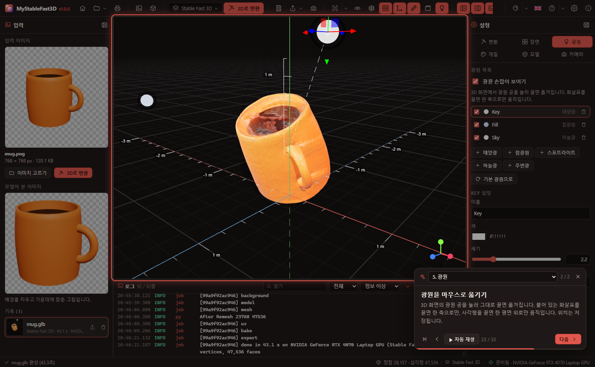
프로그램을 시작하면 튜토리얼을 실행할까요? 창이 나옵니다. [튜토리얼 시작] 또는 [나중에]를 고르고, 다음에 시작할 때도 묻기를 끄면 다시 묻지 않습니다(설정 → 화면 → 튜토리얼에서 다시 켬). 튜토리얼은 시작 화면의 [튜토리얼], 툴바의 도움말 메뉴, 설정 → 화면에서도 엽니다.
- 8개 장 33단계: 시작 화면, 화면 구성, 이미지를 3D로, 3D 화면, 광원, 재질과 모델, 저장 · 내보내기 · 인쇄, 설정과 엔진.
- 단계마다 예제를 열거나 탭 · 메뉴를 펼쳐 그 상태를 직접 보여 줍니다.
- →/Space 다음, ← 이전, Esc 닫기. 카드는 머리를 끌어 옮기고, 장 목록으로 건너뛰고, ▶ 자동 재생합니다. 멈춘 곳은 기억해 두었다가 이어서 봅니다.
5. 이미지를 3D로 변환
- 이미지 열기(Ctrl+O)로 사진을 엽니다. 창에 끌어다 놓아도 됩니다. PNG, JPG(JFIF), WebP, AVIF, GIF(첫 장면), BMP, ICO, SVG, TIFF를 읽습니다. TIFF는 입력 패널에서 미리 볼 수 없지만 변환은 됩니다.
- 툴바의 모델 드롭다운에서 모델을 고릅니다 (6장).
- 3D로 변환(F5)을 누릅니다. 3D 화면에 단계(배경 제거 → 모델 계산 → 메시 만들기 → UV 펼치기 → 텍스처 굽기)와 진행률이 보이고, 취소(Esc)로 멈출 수 있습니다.
- 끝나면 결과가 3D 화면에 나타나고 왼쪽 기록에 쌓입니다. 왼쪽 패널의 모델이 본 이미지는 배경을 지우고 가운데에 맞춘 그림입니다.
변환 옵션 (설정 패널 → 변환, 또는 변환 설정 창)
툴바의 3D로 변환 옆 단추(슬라이더 모양)나 설정 패널의 설정 창 단추를 누르면 변환 설정 창이 열립니다. 매개변수가 입력 이미지 · 모델 · 표면 다듬기 세 묶음으로 나뉘어 있고, 바꾼 값은 바로 저장됩니다. 묶음마다 ⟳ 단추로 그 묶음만, 아래 모두 기본값으로로 전부를 추천값으로 되돌립니다.
| 옵션 | 설명 |
|---|---|
| 배경 자동 제거 | 사진의 배경을 지우고 물체만 씁니다. 이미 투명 배경인 PNG는 그대로 씁니다. |
| 물체 크기 비율 | 물체가 그림에서 차지하는 비율(0.5–1, 기본 0.85, SPAR3D 0.75) |
| 텍스처 해상도 (SF3D · SPAR3D) | 자동은 GPU 1024, CPU 512 픽셀. 2048은 선명하지만 느립니다. |
| 리메시 · 정점 수 (SF3D · SPAR3D) | 메시를 고르게 다시 만들고 정점 수를 줄입니다(리메시 라이브러리가 설치된 경우). |
| 메시 해상도 · 표면 임계값 (TripoSR) | 표면을 찾는 격자 해상도(자동은 GPU 256, CPU 192)와 표면으로 볼 밀도 값 |
| 똑바로 세우기 | 위에서 찍은 사진은 모델이 앞으로 기운 결과를 냅니다. 카메라가 기울어 있었으면 옆으로도 기웁니다. 켜 두면(추천) 앞뒤(X축)와 옆(Z축)으로 각각 ±35° 안에서 물체가 가장 반듯하게 서는 각도를 찾아 세웁니다. 체스 말이나 인형처럼 키가 큰 물체는 가로로 자른 단면들의 가운데를 잇는 중심선이 수직이 되게 세웁니다. 비스듬한 것이 원래 모양이면 끕니다. |
| 작은 조각 지우기 (%) | 가장 큰 덩어리보다 이 비율보다 작은, 떨어져 떠 있는 조각을 지웁니다(기본 0.5). 0이면 모두 남깁니다. |
| 면 세분화 | 다듬기 전에 삼각형을 넷으로 나눕니다(단계마다 면 수 ×4). 각진 면이 둥글게 펴집니다. SF3D · SPAR3D · TripoSR 추천 1, TRELLIS 0. |
| 표면 다듬기 | 울퉁불퉁한 표면을 고르게 하는 횟수(부피 유지). 0은 그대로. SF3D · SPAR3D · TripoSR 추천 10, TRELLIS 2. |
| 추론 단계 · 이미지 따르기 강도 · 형상 해상도 · 최대 면 수 · 시드 (Hunyuan3D) | 기본은 Tencent 데모의 추천값(단계 30, Turbo 5 · 강도 5 · 해상도 256 · 면 40,000 · 시드 1234)입니다. 시드를 바꾸면 다른 모양이 나옵니다. |
| 이미지 따르기 강도 · 시드 (SPAR3D) | 점 구름을 만드는 확산 모델의 강도(기본 3)와 시드(기본 0) |
| 구조 단계 수 · 구조 이미지 따르기 · 세부 단계 수 · 세부 이미지 따르기 · 시드 (TRELLIS) | 1단계(물체가 차지하는 칸 찾기)와 2단계(칸마다 모양 · 색 채우기)의 단계 수와 강도. 기본은 TRELLIS 데모값(12 · 7.5 · 12 · 3 · 시드 0)입니다. 단계를 줄이면 빨라지고 거칠어집니다. |
모든 옵션의 기본값은 각 모델의 추천값이고, 풍선 도움말 끝에 추천값이 적혀 있습니다. 추천값으로 단추가 그 모델(버전)의 옵션을 되돌립니다. 옵션은 모델과 버전마다 따로 저장됩니다.
결과에 다시 적용: 표면 다듬기 묶음(조각 지우기 · 세분화 · 다듬기 · 똑바로 세우기)은 다시 변환하지 않고 지금 보이는 결과에 바로 적용할 수 있습니다. 엔진이 모델이 처음 만든 메시를 가지고 있다가 그것부터 다시 다듬으므로, 여러 번 바꿔 봐도 결과가 뭉개지지 않습니다. 이 엔진에서 방금 변환한 결과에만 쓸 수 있습니다.
6. 모델 고르기
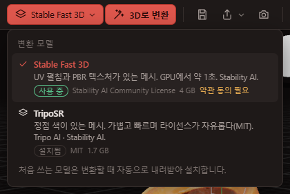
| Stable Fast 3D | SPAR3D | TripoSR | TRELLIS | |
|---|---|---|---|---|
| 만든 곳 | Stability AI | Stability AI | Tripo AI · Stability AI | Microsoft |
| 결과 | UV 펼침 + PBR 텍스처(색, 법선, 거칠기, 금속성) | SF3D와 같은 텍스처 메시, 뒷면이 더 정확 | 정점 색 메시 | 정점 색 메시, 모양 · 색이 가장 정교한 편 |
| 시간 (RTX 4070 노트북) | 약 1.5초 | 몇 초 | 약 6초 | 수십 초 |
| 시간 (CPU 16스레드) | 약 30초 | 1분 안팎 | 약 20초 | 몇 분 |
| GPU 메모리 | 6 GB 이상 | 10.5 GB (11 GB 미만이면 저메모리 모드 약 7 GB) | 4 GB 이상 | 12 GB 이상 권장 |
| 라이선스 | Stability AI Community License (약관 동의 · 토큰 필요) | MIT | ||
| 내려받기 | 4 GB | 3.6 GB + CLIP 0.9 GB | 1.7 GB | 2.7 GB + DINOv2 1.2 GB |
SPAR3D와 TRELLIS의 시간은 공개된 값을 바탕으로 한 어림입니다.
처음 고른 모델은 변환할 때(또는 메뉴의 내려받기 버튼을 누를 때) 자동으로 설치됩니다. 한 번에 한 모델만 메모리에 올라가며, 바꾸면 이전 모델을 내리고 새 모델을 불러옵니다.
SPAR3D
Stable Fast 3D의 후속판입니다. 작은 확산 모델이 물체 전체(사진에 안 보이는 뒷면 포함)의 색 점 구름을 먼저 그리고, 그 점 구름과 사진으로 메시를 만듭니다. 결과는 SF3D와 같은 UV + PBR 텍스처 메시입니다. GPU에 빈 메모리가 11 GB보다 적으면 부품을 번갈아 GPU에 올리는 저메모리 모드로 자동으로 돕니다(조금 느림). 재질 · 조명 추정에 쓰는 AlphaCLIP과 CLIP 가중치(0.9 GB)도 함께 설치됩니다.
TRELLIS
Microsoft의 1.1B 모델입니다. 1단계에서 64³ 격자 중 물체가 차지하는 칸을 찾고, 2단계에서 그 칸마다 모양과 색을 채운 뒤 메시로 꺼냅니다. 이 프로그램은 메시만 꺼내므로 결과는 정점 색 메시입니다(TRELLIS의 가우시안 · 텍스처 굽기는 CUDA 전용 컴파일 렌더러가 필요해 쓰지 않습니다). 원래 필요한 xformers · spconv · kaolin 대신 같은 계산을 하는 PyTorch 코드를 쓰므로 컴파일 없이 설치되고 CPU · Apple GPU에서도 돌지만, CPU에서는 몇 분 걸립니다. 이미지 인코더 DINOv2(1.2 GB)가 함께 설치됩니다.
Hunyuan3D와 버전
Hunyuan3D(Tencent)는 버전이 여럿이라 모델 메뉴의 Hunyuan3D 아래 버전 단추나 설정 패널의 버전 상자로 고릅니다. 버전마다 가중치 · 옵션 · 설치 상태가 따로입니다. 형상만 만들며(텍스처 없음, 밝은 회색), 텍스처 모델은 컴파일된 CUDA 확장과 20 GB 이상의 GPU 메모리가 필요해 넣지 않았습니다.
| 버전 | 특징 | 내려받기 |
|---|---|---|
| 2.1 | 최신 공개판(2025년 6월), 가장 세밀함. GPU 메모리 10 GB 권장 | 7.4 GB |
| 2.0 · 2.0 Turbo | 기본판과 5단계로 줄인 빠른 판 | 4.9 · 5.3 GB |
| 2.0 mini · mini Turbo | 작은 판(0.6B), 가볍고 빠름 | 3.8 · 4.2 GB |
GPU에 빈 메모리가 버전이 원하는 만큼 없으면 이미지 인코더 · 확산 모델 · 형상 디코더가 차례로 GPU에 올라갑니다(조금 느림). 다른 프로그램이 GPU 메모리를 쓰고 있으면 이렇게 됩니다.
7. GPU와 CPU
- 자동(기본): NVIDIA GPU(CUDA)가 있으면 GPU, Apple Silicon Mac은 Apple GPU(MPS), 그 밖에는 CPU를 씁니다.
- GPU 메모리가 모자라거나 드라이버 오류로 GPU에서 실패하면, 모델을 CPU로 옮겨 같은 이미지를 자동으로 다시 변환합니다. 로그에 경고가 남고, 설정 패널의 마지막 변환에 "GPU 실패 → CPU"가 표시됩니다.
- 설정 패널 → 변환 → 계산 장치에서 GPU 또는 CPU로 고정할 수 있습니다.
- GPU가 없는 컴퓨터에는 처음부터 CPU 판 PyTorch(약 200 MB)가 설치됩니다.
8. 3D 파일 열기
3D 파일 열기(Ctrl+Shift+O) 또는 끌어다 놓기로 엽니다.
| 형식 | 확장자 |
|---|---|
| glTF | .glb .gltf |
| Wavefront OBJ (+MTL, 텍스처) | .obj |
| STL · PLY | .stl .ply |
| FBX · COLLADA · KMZ | .fbx .dae .kmz |
| 3MF · AMF · 3DS · LightWave | .3mf .amf .3ds .lwo |
| USD | .usdz .usda .usdc .usd |
| VRML · VTK | .wrl .vrml .vtk .vtp |
| 점 구름 | .pcd .xyz |
OBJ의 MTL과 텍스처, .gltf의 .bin과 그림처럼 함께 쓰는 파일은 데스크톱 앱에서는 같은 폴더에서 자동으로 찾습니다. 웹 버전에서는 열기 대화상자에서 그 파일들을 함께 선택하거나 함께 끌어다 놓으세요.
9. 3D 화면 다루기
| 마우스 | 동작 |
|---|---|
| 왼쪽 끌기 | 모델 주위로 회전 |
| 오른쪽 끌기 (또는 Shift+왼쪽) | 화면 이동 |
| 휠 | 확대 · 축소 |
| 방향 큐브 (오른쪽 아래) 클릭 | 그 축 방향에서 보기 |
오른쪽 클릭 메뉴: 3D 화면, 입력 이미지, 기록, 로그에서 오른쪽 단추를 누르면(끌지 않고) 그 자리에서 쓸 수 있는 명령이 아이콘과 함께 나옵니다 — 화면 맞춤 · 방향, 격자 · 축 · 눈금자 켜고 끄기, 저장 · 내보내기 · 인쇄 · 화면 그림 복사, 이미지 비우기, 로그 줄 복사 등.
툴바의 화면 맞춤(F)은 모델과 광원이 보이게 카메라를 맞추고, 옆의 화살표 메뉴로 정면 · 뒷면 · 왼쪽 · 오른쪽 · 윗면 · 아랫면 · 등각 방향을 고릅니다. 자동 회전은 모델 주위를 천천히 돕니다(속도는 카메라 탭).
10. 격자 · 좌표축 · 눈금자
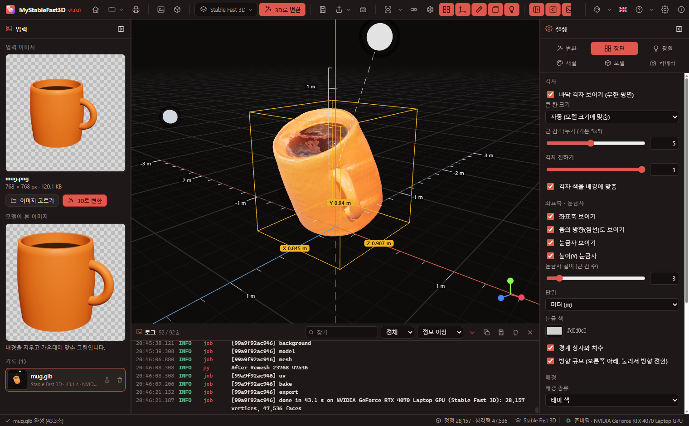
- 격자: 바닥(Y=0)에 끝없이 이어지는 평면입니다. 큰 칸 하나가 5×5로 나뉘어 있고, 멀어질수록 흐려집니다. 큰 칸 크기는 자동(모델 크기에 맞춤: 1 m 모델이면 1 m 칸, 작은 칸 20 cm)이거나 직접 고릅니다. 나누기 수 · 진하기 · 색도 바꿀 수 있습니다.
- 좌표축: X(빨강) · Y(초록, 위) · Z(파랑). 음의 방향은 점선으로 보입니다.
- 눈금자: X · Z 축을 따라 작은 칸마다 눈금, 큰 칸마다 길이가 쓰여 있고, 모델 뒤 모서리에 높이(Y) 눈금자가 섭니다. 단위는 m · cm · mm · in 또는 표시 안 함.
- 경계 상자: 모델을 감싸는 상자와 X · Y · Z 치수를 보입니다.
배경(테마 색 · 단색 · 그라데이션 · 환경 그림), 환경 반사광, 톤 매핑, 노출, 그림자도 장면 탭에서 바꿉니다.
11. 광원
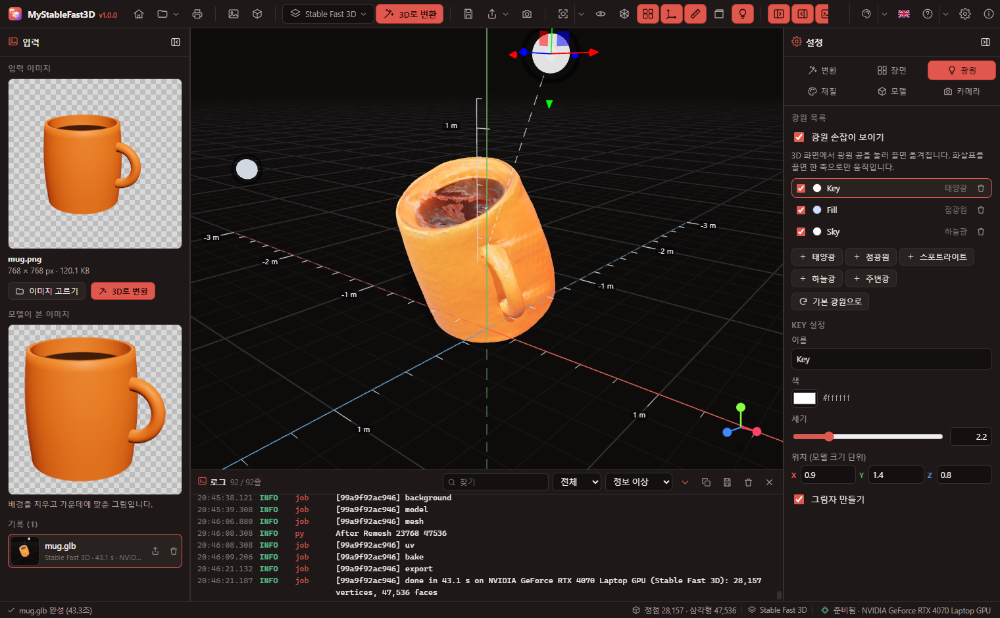
- 3D 화면의 광원 공을 눌러 끌면 바로 옮겨집니다. 선택한 광원에는 이동 손잡이가 붙어, 화살표를 끌면 한 축으로만, 사각형을 끌면 한 평면 위로만 움직입니다.
- 점선은 광원이 비추는 방향(모델 가운데)을 가리킵니다.
- 광원 종류: 태양광(방향광, 그림자) · 점광원 · 스포트라이트 · 하늘광(위·아래 색) · 주변광. 각 광원의 켜기/끄기, 색, 세기, 위치, 그림자, 각도 등을 바꿉니다.
- 위치는 모델 크기 단위로 저장되므로, 다른 크기의 모델을 열어도 광원이 같은 자리에 있습니다. 광원 배치는 다음 실행에도 그대로입니다. 기본 광원으로는 처음 세 광원으로 되돌립니다.
12. 재질과 표시
| 재질 | 설명 |
|---|---|
| 원래 재질 | 파일에 든 텍스처와 재질 |
| 점토 | 색 없이 모양만 보이는 회색(색 변경 가능) |
| 법선 | 면의 방향을 색으로 |
| 정점 색 | 정점에 저장된 색(TripoSR 결과) |
와이어프레임 · 면마다 평평하게(Flat) · 뒷면도 그리기를 켤 수 있습니다. 표시 재질은 보기만 바꾸며, 저장할 때는 원래 재질로 저장됩니다.
13. 모델 회전 · 배율
설정 패널 → 모델 탭에서 파일 정보(정점 · 삼각형 · 재질 · 텍스처 수, 크기)를 보고, 회전(도)과 배율을 바꿉니다. X −90° 같은 버튼은 Z-up 파일을 바로 세울 때 편합니다. 모델은 항상 바닥 위에 놓이며, 회전과 배율은 저장할 때 함께 적용됩니다.
14. 저장과 형식 변환
파일 단추 바로 오른쪽의 저장(Ctrl+S)은 보이는 모델을 GLB로 저장합니다(회전 · 배율을 바꾸지 않았으면 원래 파일 그대로). 내보내기(Ctrl+Shift+S) 메뉴에서 다른 형식이나 화면 그림(PNG)을 고릅니다. 어떤 형식으로 연 파일이든 다른 형식으로 바꿔 내보낼 수 있습니다.
| 형식 | 텍스처 | 쓰임 |
|---|---|---|
| glTF Binary (.glb) | 포함 | 웹 · 게임 엔진 · Blender (권장) |
| glTF (.gltf) | 포함(파일 안에) | 사람이 읽는 JSON |
| Wavefront OBJ (.obj) | 없음 | 여러 프로그램 호환 |
| STL (.stl, 바이너리 / ASCII) | 없음 | 3D 프린팅 (크기 · 방향 그대로 — 프린터용은 15장) |
| PLY (.ply, 바이너리 / ASCII) | 정점 색 | 점 구름 · 스캔 데이터 |
| USDZ (.usdz) | 포함 | Apple AR Quick Look |
| 3D Manufacturing (.3mf) | 재질 색 · 정점 색 | 3D 프린팅 (슬라이서) |
| AMF (.amf) | 재질 색 | 3D 프린팅 |
| COLLADA (.dae) | 재질 색 · 정점 색 | SketchUp · 여러 3D 프로그램 |
| VRML 2.0 (.wrl) | 재질 색 · 정점 색 | 오래된 CAD · 과학 도구 |
| VTK (.vtk) | 정점 색 | ParaView · 과학 시각화 |
| PCD · XYZ (.pcd, .xyz) | 점 색 | 점 구름 (정점만, 면 없음) |
3MF · AMF · DAE 파일에는 설정 → 장면의 단위가 함께 기록됩니다(숫자는 그대로).
화면 저장은 지금 보이는 화면을 PNG로 저장합니다. 왼쪽 기록의 저장 버튼은 그 결과를 원래 파일 그대로 저장합니다. 설정 → 파일에서 변환 결과를 원본 이미지 옆에 자동 저장을 켤 수 있습니다(데스크톱).
인쇄
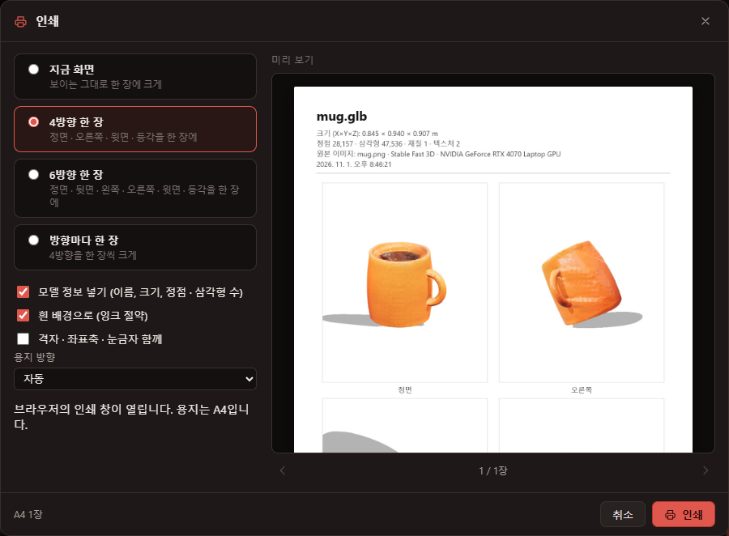
저장 단추 오른쪽의 인쇄(Ctrl+P)는 모델을 그림으로 A4에 인쇄합니다.
| 항목 | 설명 |
|---|---|
| 인쇄할 내용 | 지금 화면 · 4방향 한 장(정면 · 오른쪽 · 윗면 · 등각) · 6방향 한 장 · 방향마다 한 장 |
| 모델 정보 | 이름, 크기, 정점 · 삼각형 · 재질 · 텍스처 수, 원본 이미지와 모델, 날짜를 위에 넣습니다 |
| 흰 배경 · 격자 함께 | 잉크를 아끼는 흰 배경, 격자 · 좌표축 · 눈금자를 넣을지 |
| 프린터 · 매수 · 용지 방향 (데스크톱) | 설치된 프린터 목록(기본 표시), 1~99부, 자동 · 세로 · 가로. [인쇄]는 고른 프린터로 바로 보내고, [시스템 인쇄 창…]은 운영체제 인쇄 창을 엽니다 |
| 미리 보기 | 인쇄될 장을 그대로 보여 주고, 여러 장이면 ◀ ▶로 넘깁니다 |
15. 3D 프린터로 뽑기
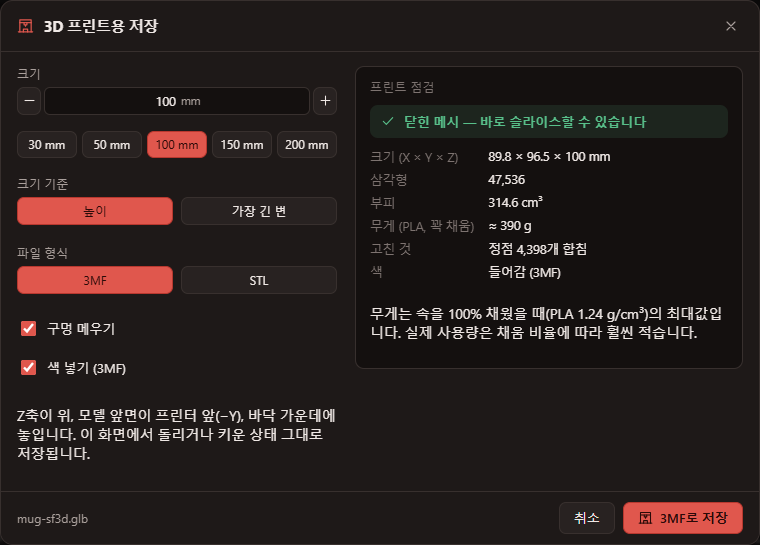
파일 메뉴 · 내보내기 메뉴 · 3D 화면의 오른쪽 클릭 메뉴의 3D 프린트용 저장(Ctrl+Shift+P)은 보이는 모델을 슬라이서(PrusaSlicer · Bambu Studio · OrcaSlicer · Cura 등)가 바로 쓸 수 있는 파일로 저장합니다. 일반 내보내기는 숫자를 그대로 쓰지만(변환 결과는 약 1 단위 = 1 m 크기, Y 위쪽), 프린트용 저장은 다음을 해 줍니다.
| 항목 | 설명 |
|---|---|
| 크기 (mm) · 크기 기준 | 높이 또는 가장 긴 변을 이 길이로 맞춥니다(비율 유지). 30 · 50 · 100 · 150 · 200 mm 단추로 바로 고릅니다. |
| 파일 형식 | 3MF(권장) — 단위 mm와 색이 들어갑니다. STL — 바이너리, 색 없음, 거의 모든 슬라이서에서 열림. |
| 구멍 메우기 | 열린 가장자리를 찾아 막아 닫힌(수밀) 물체로 만듭니다. 슬라이서가 안과 밖을 구별하려면 필요합니다. |
| 색 넣기 (3MF) | 정점 색이나 텍스처 색을 3MF에 넣습니다. 여러 색 프린터(Bambu AMS, Prusa MMU)에서 칠할 수 있습니다. |
저장할 때는 화면에 보이는 그대로(모델 탭의 회전 · 배율 포함) Z축이 위, 모델 앞면이 프린터 앞(−Y), 바닥 가운데(Z = 0)에 놓고, 겹친 정점을 합치고(텍스처 이음매에서 갈라진 정점), 꼭짓점이 겹친 면과 중복된 면을 지우고, 구멍을 메우고, 이웃과 반대로 감긴 면을 맞추고, 안팎이 뒤집혔으면 바로잡습니다.
오른쪽 프린트 점검에는 결과가 바로 나옵니다: 닫힌 메시인지(아니면 열린 모서리 · 셋 이상 겹친 모서리 수), 크기(X × Y × Z mm), 삼각형 수, 부피(cm³), 속을 꽉 채웠을 때의 PLA 무게(1.24 g/cm³, 최대값 — 실제는 채움 비율에 따라 훨씬 적음), 고친 것.
16. 로그 패널
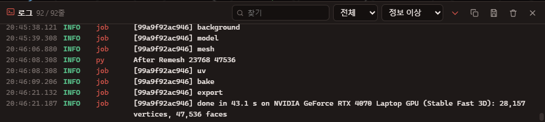
설치(패키지 내려받기, 모델 내려받기), 모델 불러오기, 변환의 각 단계, 오류가 시간 순서대로 쌓입니다. 출처(앱 · 실행기 · 엔진)와 수준(디버그 · 정보 · 경고 · 오류)으로 거르고, 찾기 · 복사 · 파일로 저장 · 지우기를 할 수 있습니다. Ctrl+L로 보이거나 숨기고, 상태 표시줄의 엔진 상태를 눌러도 열립니다.
17. 설정
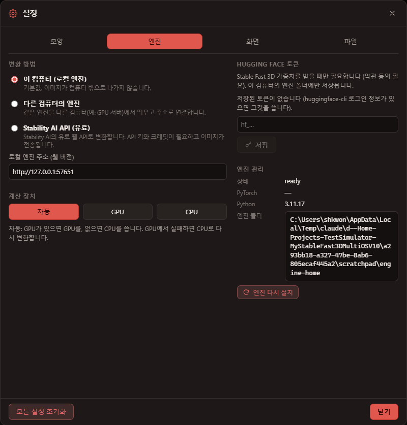
| 탭 | 내용 |
|---|---|
| 모양 | 테마(어둡게 20 · 밝게 20 · 사용자 정의), 언어, 글꼴 · 크기 · 모양 |
| 엔진 | 변환 방법(이 컴퓨터 · 다른 컴퓨터의 엔진 · Stability AI API), 계산 장치, Hugging Face 토큰, 엔진 다시 시작 · 폴더 열기 · 다시 설치 |
| 화면 | 시작 화면, 툴바 글자, 상태 표시줄, 로그 패널 |
| 파일 | 기본 저장 형식, 자동 저장 |
변환 방법
- 이 컴퓨터 (로컬 엔진) — 기본값. 이미지가 밖으로 나가지 않습니다.
- 다른 컴퓨터의 엔진 — GPU가 있는 다른 컴퓨터에서 엔진을
npm run engine -- --host 0.0.0.0으로 띄우고 그 주소(예:http://192.168.0.10:57660)를 넣습니다. - Stability AI API (유료) — 기본으로 꺼져 있습니다. 고를 때 확인을 받고, API 키가 있어야 하며, 변환마다 크레딧이 차감되고 이미지가 Stability AI로 전송됩니다. 쓰는 동안 상태 표시줄에 "Stability AI API (유료)"가 보입니다.
18. 웹 버전
웹 버전은 같은 화면을 브라우저에서 엽니다. 변환은 이 컴퓨터에서 도는 엔진이 합니다.
npm run web— 개발 서버(http://localhost:5196)와 엔진(http://127.0.0.1:57660)을 함께 띄웁니다. 엔진은 데스크톱 앱과 같은 폴더를 쓰므로 한 번만 설치됩니다.npm run engine— 엔진만 띄웁니다.--port,--host,--home을 줄 수 있습니다.npm run build—dist/에 웹 페이지를 만듭니다. 어느 웹 서버에 올려도 되고, 엔진 주소는 설정 → 엔진에서 정합니다.
19. 단축키
| 키 | 동작 |
|---|---|
| Ctrl+O | 이미지 열기 |
| Ctrl+Shift+O | 3D 파일 열기 |
| F5 또는 Ctrl+Enter | 3D로 변환 |
| Esc | 변환 취소 |
| Ctrl+S | 저장 (GLB) |
| Ctrl+Shift+S | 내보내기 (마지막 형식) |
| Ctrl+P | 인쇄 |
| Ctrl+Shift+P | 3D 프린트용 저장 |
| F1 | 사용 설명서 |
| F | 화면 맞춤 |
| Ctrl+L | 로그 패널 |
20. 데이터와 제거
| 무엇 | Windows | macOS / Linux |
|---|---|---|
| 설정 | %APPDATA%\My3DObjects\settings.json | ~/Library/Application Support/My3DObjects · ~/.config/My3DObjects |
| 엔진 (Python, PyTorch, 모델 코드, 배경 제거 모델, TRELLIS의 DINOv2 · SPAR3D의 CLIP) | %LOCALAPPDATA%\My3DObjects\engine | ~/Library/Application Support/My3DObjects/engine · ~/.local/share/My3DObjects/engine |
| 모델 가중치 | Hugging Face 공용 캐시 ~/.cache/huggingface (다른 프로그램과 함께 씀) | |
Windows에서 제거할 때 엔진(수 GB)과 설정을 지울지 따로 묻습니다. 공용 Hugging Face 캐시는 지우지 않습니다. 엔진을 처음부터 다시 설치하려면 설정 → 엔진 → 엔진 다시 설치를 누릅니다.
21. 문제 해결
| 증상 | 해결 |
|---|---|
| "엔진에 연결할 수 없음" (웹) | npm run engine이 실행 중인지, 설정 → 엔진의 주소가 맞는지 확인합니다. |
| "토큰 필요" | 2장의 방법으로 약관에 동의하고 토큰을 넣거나 TripoSR · TRELLIS를 씁니다. |
| 설치 실패 | 로그 패널의 오류를 확인하고 다시 시도를 누릅니다. 네트워크(회사 방화벽 등)가 PyPI, download.pytorch.org, github.com, huggingface.co(TRELLIS는 dl.fbaipublicfiles.com, SPAR3D는 openaipublic.azureedge.net도)에 닿아야 합니다. |
| GPU가 있는데 CPU로 돎 | NVIDIA 드라이버를 최신으로 업데이트한 뒤 설정 → 엔진 → 엔진 다시 설치를 누릅니다. |
| 결과가 이상함 | 배경이 단순한 사진, 물체 크기 비율 조정, 다른 모델을 시도합니다. |
| TRELLIS가 GPU에서 실패하고 CPU로 돎 | GPU 메모리가 모자란 것입니다(12 GB 이상 권장). 다른 프로그램을 닫거나, 구조 · 세부 단계 수를 줄이거나, 그대로 CPU 결과를 기다립니다. |
| 슬라이서가 "구멍" · "non-manifold"를 알림 | 3D 프린트용 저장에서 구멍 메우기를 켜고, 프린트 점검이 "닫히지 않음"이면 슬라이서의 수리 기능을 씁니다. |
22. 라이선스
My3DObjects는 MIT 라이선스입니다. 모델은 프로그램에 들어 있지 않고 처음 쓸 때 내려받으며, 각자의 라이선스를 따릅니다.
- Stable Fast 3D — Stability AI Community License. 연 매출 100만 달러 미만은 상업적 사용도 무료(등록 필요). Powered by Stability AI. This Stability AI Model is licensed under the Stability AI Community License, Copyright © Stability AI Ltd. All Rights Reserved.
- SPAR3D — Stability AI Community License (Stable Fast 3D와 같음). 함께 받는 AlphaCLIP은 Apache-2.0, CLIP 가중치는 MIT.
- TripoSR — MIT (Tripo AI & Stability AI)
- TRELLIS — MIT (Microsoft). 함께 받는 FlexiCubes · DINOv2는 Apache-2.0.
- Hunyuan3D 2.0 · 2.1 — Tencent Hunyuan 3D Community License. 유럽 연합 · 영국 · 대한민국은 허락 지역에서 제외되며, 월 사용자 100만 명 이상의 상업적 사용은 별도 허가가 필요합니다.
컴파일이 필요한 확장(texture_baker, uv_unwrapper, torchmcubes, TRELLIS의 xformers · spconv · kaolin)은 같은 일을 하는 PyTorch · scikit-image 코드로 바꿔 실행합니다. 예제 그림 34장은 TRELLIS.2 · TripoSR 저장소의 공개 예제(MIT)를 고치지 않고 이름만 바꾼 것입니다. 자세한 내용은 설치 폴더의 NOTICE.md, LICENSE-MODELS.md에 있습니다.